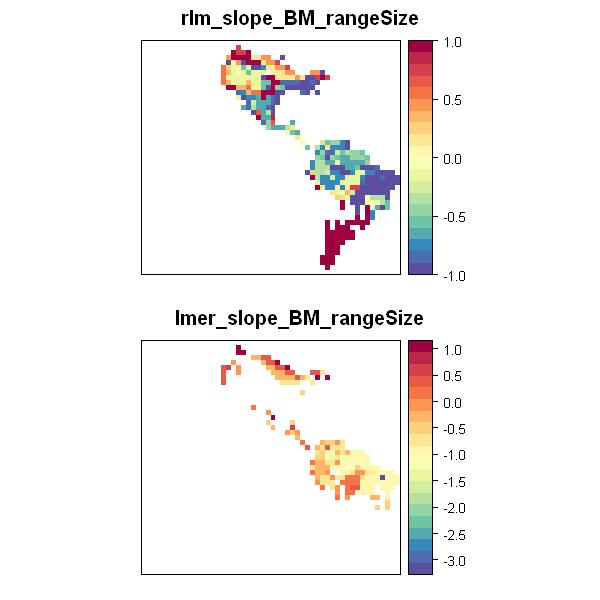

Appendix S3
Supporting information in Valcu, M., James. D, Kempenaers, B. rangeMapper: A platform for the study of macroecology of life history traits, Global Ecology and Biogeography, in press (2011)
Case study 2: Geographical variation in the relationship between range size and body size

|
This script is updated to run using the latest version of the package (see footnote). |
require(rangeMapper) # SET UP PROJECT td = tempdir() #Initiates a new rangeMapper project (wrens2.sqlite) to a temporary directory dbcon = rangeMap.start(file = "wrens2.sqlite", overwrite = TRUE, dir = td)
#Location of the vector(*.shp) breeding ranges on disk branges = system.file(package = "rangeMapper", "extdata", "wrens", "vector_combined")
# Saves the global bounding box as the union of all species bounding boxes. # For alternative methods to saving the global bounding box the see examples under ?rangeMapper global.bbox.save(con = dbcon, bbox = branges)
# Saves the grid size (i.e. the size of a canvas cell) using the default value # The grid size can be specified by e.g. gridSize.save(dbcon, gridSize = 2.5) gridSize.save(dbcon, gridSize = 2.5)
# Saves the canvas grid using the global bunding box and the grid size. canvas.save(dbcon)
# Performs vector range maps interpolation with the canvas. r = readOGR(branges, "wrens", verbose = FALSE) processRanges(spdf = r, con = dbcon, ID = "sci_name", metadata = rangeTraits() )
# Uploads to the existing project a data.frame containing life history data. data(wrens) bio.save(con = dbcon, loc = wrens, ID = "sci_name")
# Merge ranges parameters with life history data
# This is an example on how to directly query a rangeMapper project
RMQuery(dbcon, "CREATE TEMP VIEW IF NOT EXISTS
BIO_temp AS Select * FROM
BIO_wrens
JOIN metadata_ranges ON sci_name = bioid")
# Then the temp. table is fetched and saved as a 'BIO' table
# Alternatively you can fetch both tables and perform the join operation in R using 'merge'. wrens2 = RMQuery(dbcon, "select * from BIO_temp") wrens2$log_body_mass = log(wrens2$body_mass) bio.save(con = dbcon, loc = wrens2, ID = "sci_name")
# DEFINE NEW FUNCTIONS
# The newly defined functions should take 'formula' & 'data' as arguments and should return a numeric vector of length 1
# at this stage packages MASS and lme4 are need it.
if(!require('MASS')) stop("Package MASS is not available")
if(!require('lme4')) stop("Package lme4 is not available")
# Slope of a robust regression (rlm function in MASS package)
# ... allows for further arguments to be passed to rlm()
# using try allows the computation to move on to the next canvas cell without stopping the entire process
# the function will return NA if rlm does not return a coeficient.
rlm_slope = function (formula, data,...) {
x = try(as.numeric(
rlm(formula, data,...)$coefficients[2]), silent = TRUE)
if(inherits(x, "try-error")) x = NA
return(x)
}
# Slope of a mixed-effect model (lmer function in lme4 package)
lmer_slope = function (formula, data) {
fm = try(lmer(formula, data = data), silent = TRUE)
if (inherits(fm, "try-error"))
res = NA
else res = fixef(fm)[2]
as.numeric(res)
}
# CREATE MAPS using the user-defined functions
rangeMap.save(dbcon, FUN = rlm_slope, biotab = "wrens2", biotrait = "log_body_mass",
tableName = "rlm_slope_BM_rangeSize",
formula = scale(log(Area)) ~ scale(log_body_mass),maxit = 20)
rangeMap.save(dbcon, FUN = lmer_slope, biotab = "wrens2", biotrait = "log_body_mass",
tableName = "lmer_slope_BM_rangeSize",
formula = scale(log(Area)) ~ scale(log_body_mass)+(1|genus))
# SHOW MAPS
m= rangeMap.fetch(dbcon, c("rlm_slope_BM_rangeSize",
"lmer_slope_BM_rangeSize" ))
plot(m, style = "equal")

[1] "R version 2.14.0 (2011-10-31)" [1] "rangeMapper 0.0-6.6" [1] "website generated using ascii 2.1"